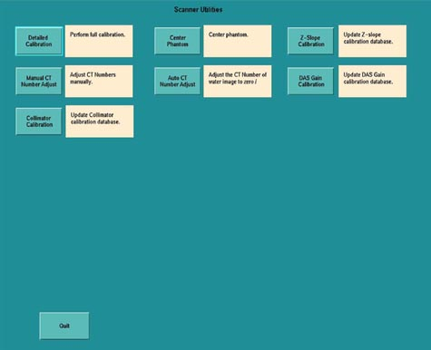
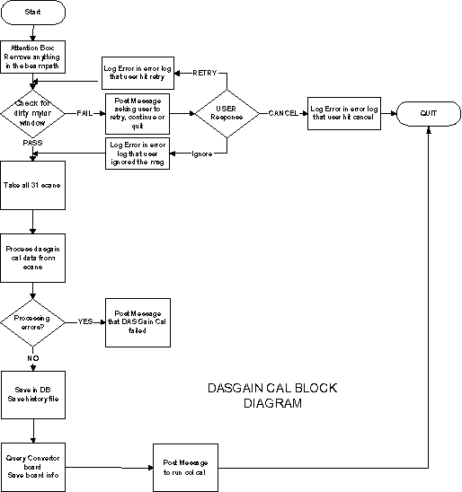
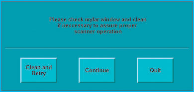

Operating Documentation
Direction 5114043-800, Rev# 9
LightSpeed 3.X Service Methods (Advanced)
Operating Documentation |
Enter DAS Gain Calibration through the Calibration menu on the Service Desktop. If you are not already on the Service Desktop, select the [SERVICE DESKTOP] icon.
Select the [CALIBRATION] icon.
Select [DAS GAIN CALIBRATION] .
Before the DAS Gain scans are taken, a Mylar window check is done to ensure that the window is clean. Otherwise it can corrupt the tracking cals.
If the check succeeds, the DAS Gain scans are taken, and the cal proceeds.
If the check fails, a pop-up is posted asking the user to provide inputs on whether he/she wants to quit, continue, or retry the Mylar window check after cleaning the Mylar window.
The appropriate messages and pop-ups are discussed later in this procedure.
The Mylar window check and the corresponding state machine are also discussed later in this procedure.
DAS Gain Calibration consists of 31 scans that are taken consecutively. The cal processing on the scan keys is done after all the scans are done.
Illustration 1: Scanner Utilities Screen

Illustration 2: DAS Gain Cal Block Diagram

MESSAGES AND POP-UPS
Before DAS Gain or Collimator Cal come up, an attention box is posted asking the user to clear any obstruction in the path of the beam. Only when the user hits [OK] , will the cals proceed. Also after DAS Gain and Collimator Cals are done, each will post an attention box asking the user to run FastCal.
DAS GAIN CAL MESSAGES
Message 1: Please remove any obstruction in the path of the beam.
Message 2: The user retried Mylar window check.
Message 3: Please check Mylar window and clean if necessary to assure proper scanner operation.
Message 4: User quit the tracking cal after the Mylar window check failed.
Message 5: User ignored the Mylar window check failure and continued with the tracking cal.
Message 6: DAS Gain Cal was not completed.
MYLAR WINDOW CHECK
There is increased sensitivity with the tracking feature, if the Mylar window is dirty (refer to Illustration 3). Therefore, a check of the Mylar window comprising four scans must be done to ensure that the Mylar window is indeed clean before the tracking cals (DAS Gain Cal and Collimator Cals) are performed. If the check fails and the window is found to be dirty, a message pop-up is posted that will require a user response. The user can choose to retry the Mylar window check after cleaning the window, quit, or carry on with the appropriate tracking cal anyway.
Illustration 3: Mylar Window Check Screen
